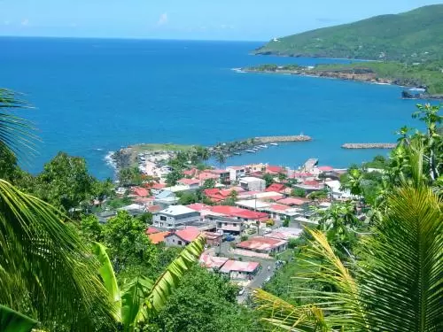
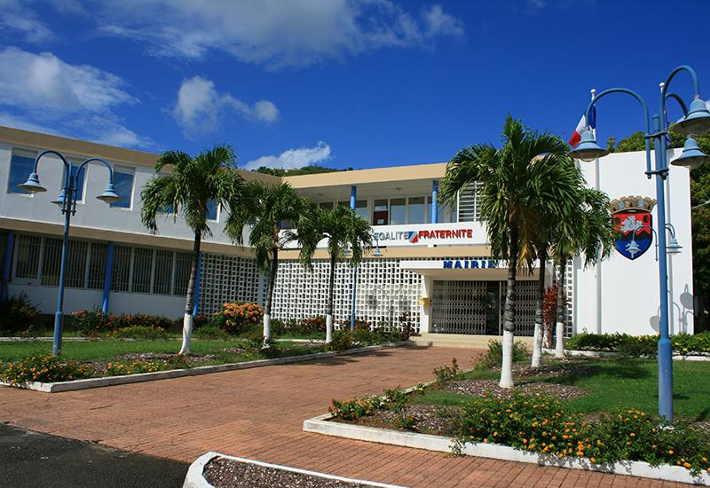
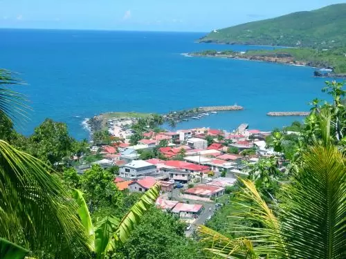
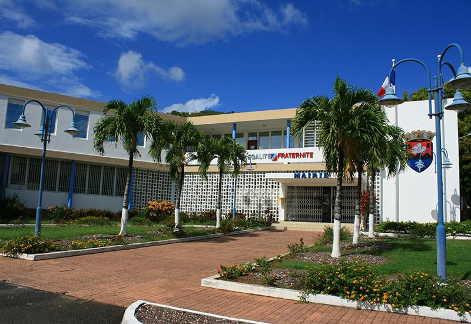

Notre Territoire
Le CASBT est un endroit extraordinaire, où la nature, la culture et
la technologie se mêlent pour forger un avenir prometteur. C'est
un rappel que la Terre est notre bien le plus précieux, et que la
collaboration et la préservation de notre planète sont essentielles pour garantir la prospérité de tous.
En Savoir Plus
Les Elus
Les élus du CASBT sont des gardiens de l'avenir de leur région et,
par extension, de la planète. Leur engagement envers la protection
de l'environnement, le développement durable et la paix mondiale en
fait des leaders inspirants qui travaillent sans relâche pour préserver
cet endroit unique et précieux
En Savoir Plus
FAQ
Le CASBT vous présente des questions et des
réponses publiées par des visiteurs et les élus. Ce service
est un moyen formidable pour obtenir des informations
précises et détaillées sur l'agglomération.
En Savoir Plus
 


